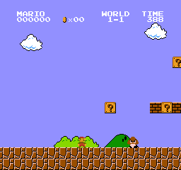

The Reinforcement Learning Framework#
The RL Process#

To understand the RL process, let’s imagine an agent learning to play a platform game:

Our Agent receives state \(S_{0}\) from the Environment — we receive the first frame of our game (Environment).
Based on that state \(S_{0}\), the Agent takes action \(A_{0}\) — our Agent will move to the right.
The environment goes to a new state \(S_{1}\) — new frame.
The environment gives some reward \(R_{1}\) to the Agent — we’re not dead (Positive Reward +1).
This RL loop outputs a sequence of state, action, reward and next state.
The reward hypothesis: the central idea of Reinforcement Learning#
\(\Rightarrow\) Why is the goal of the agent to maximize the expected return?
Because RL is based on the reward hypothesis, which is that all goals can be described as the maximization of the expected return (expected cumulative reward).
Observations/States Space#
Observations/States are the information our agent gets from the environment. In the case of a video game, it can be a frame (a screenshot). In the case of the trading agent, it can be the value of a certain stock, etc.
There is a differentiation to make between observation and state, however:
State \(s\): is a complete description of the state of the world (there is no hidden information). In a fully observed environment.

In a chess game, we have access to the whole board information, so we receive a state from the environment. In other words, the environment is fully observed.
Observation \(o\): is a partial description of the state. In a partially observed environment.

In Super Mario Bros, we only see the part of the level close to the player, so we receive an observation.
Caution
In this course, we use the term “state” to denote both state and observation, but we will make the distinction in implementations.
Action Space#
The Action space is the set of all possible actions in an environment. The actions can come from a discrete or continuous space:
Discrete space: the number of possible actions is finite. Again, in Super Mario Bros, we have a finite set of actions since we have only 4 directions.
Continuous space: the number of possible actions is infinite. A Self Driving Car agent has an infinite number of possible actions since it can turn left 20°, 21,1°, 21,2°, turn right 20°, etc.
Reward and Return#
The reward function \(R\) is critically important in reinforcement learning. It depends on the current state of the world, the action just taken, and the next state of the world:
although frequently this is simplified to just a dependence on the current state, \(r_{t+1} = R(s_t)\), or state-action pair \(r_{t+1} = R(s_t,a_t)\).
The goal of the agent is to maximize some notion of cumulative reward over a trajectory, but this actually can mean a few things. We’ll notate all of these cases with \(R(\tau)\), and it will either be clear from context which case we mean, or it won’t matter (because the same equations will apply to all cases).
One kind of return is the finite-horizon undiscounted return, which is just the sum of rewards obtained in a fixed window of steps:
Another kind of return is the infinite-horizon discounted return, which is the sum of all rewards ever obtained by the agent, but discounted by how far off in the future they’re obtained. This formulation of reward includes a discount factor \(\gamma \in (0,1)\):
Why would we ever want a discount factor, though? Don’t we just want to get all rewards? We do, but the discount factor is both intuitively appealing and mathematically convenient. On an intuitive level: cash now is better than cash later. Mathematically: an infinite-horizon sum of rewards may not converge to a finite value, and is hard to deal with in equations. But with a discount factor and under reasonable conditions, the infinite sum converges.
Formalism#
So far, we’ve discussed the agent’s environment in an informal way, but if you try to go digging through the literature, you’re likely to run into the standard mathematical formalism for this setting: Markov Decision Processes (MDPs). An MDP is a 5-tuple, \(\langle S, A, R, P, \rho_0 \rangle\), where
\(S\) is the set of all valid states,
\(A\) is the set of all valid actions,
\(R : S \times A \times S \to \mathbb{R}\) is the reward function, with \(r_{t+1} = R(s_t, a_t, s_{t+1})\),
\(P : S \times A \to \mathcal{P}(S)\) is the transition probability function, with \(P(s'|s,a)\) being the probability of transitioning into state \(s'\) if you start in state \(s\) and take action \(a\),
and \(\rho_0\) is the starting state distribution.
The name Markov Decision Process refers to the fact that the system obeys the Markov property: transitions only depend on the most recent state and action, and no prior history.